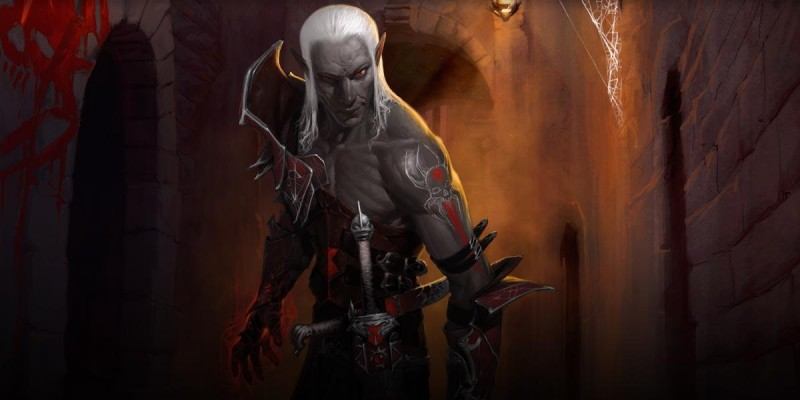

Outreterre
Ce nouvel Unearthed Arcana présente plusieurs nouvelles options de personnages, idéales pour des aventures dans l'Outreterre.
- Style de combat
- Chasseur des profondeurs (rôdeur)
- Ombres (ensorceleur)
- Le céleste (occultiste)
Style de combat
L'Outreterre offre un environnement de combat différent, que les guerriers, les paladins et les rôdeurs peuvent apprendre à utiliser à leur avantage. Les nouvelles options de style de combat ci-dessous sont disponibles pour ces trois classes.
Tir à bout portant
Vous êtes formés à effectuer des attaques à distance de près. Lorsque vous effectuez une attaque à distance tout en étant à 1,50 mètre ou moins d'une créature hostile, vous n'avez pas de désavantage au jet d'attaque. Vos attaques à distance ignorent les abris partiels (50 %) et les abris importants (75%) des cibles situées à 9 mètres ou moins de vous. Enfin, vous obtenez un bonus de +1 aux jets d'attaque des attaques à distance.
Combat en tunnels
Vous excellez à défendre les passages étroits, les portes et autres espaces restreints. Par une action bonus, vous pouvez prendre une posture défensive qui dure jusqu'au début de votre prochain tour. Lorsque vous êtes dans cette position, vous pouvez effectuer des attaques d'opportunité sans utiliser votre réaction, et pouvez utiliser votre réaction pour effectuer une attaque au corps à corps contre une créature qui se déplace de plus de 1,50 mètre dans votre allonge.
Archétype de rôdeur : chasseur des profondeurs
Les aventuriers qui descendent dans les profondeurs pour des quêtes désespérées ou en réponse à la promesse de grandes richesses se retrouvent rapidement face à face avec le mal qui couve sous terre. Bien que beaucoup de ces personnages ne soient que trop heureux de s'échapper et de revenir de nouveau à la surface du monde, les rôdeurs avec l'archétype chasseur des profondeurs se réjouissent de chaque incursion dans le monde du dessous, cherchant à découvrir et à vaincre les menaces de l'Outreterre avant qu'elles n'atteignent la surface.
Nombre de chasseur des profondeurs sont des elfes, cette race ne sachant que trop bien la menace que représentent les drows. Ils explorent de nouveaux passages vers l'Outreterre, les cartographient avec soin et veillent à ce qu'ils restent surveillés en tout temps. Ils s'aventurent également dans les profondeurs en prenant part à de longues patrouilles dangereuses, disparaissant pendant des mois. Et beaucoup d'entre eux ne reviennent jamais. Les chasseurs des profondeurs maîtrisent des sorts qui leur sont utiles pour naviguer dans l'Outreterre, et leurs tactiques de combat se concentrent sur l'embuscade, la surprise et la discrétion. Ils se battent seuls ou en petits groupes, dans un territoire hostile, et doivent employer des tactiques astucieuses pour l'emporter.
Explorateur d'Outreterre
Au niveau 3, vous maîtrisez l'art de l'embuscade. Lors de votre premier tour dans un combat, vous gagnez un bonus de +3 à votre vitesse. Si vous utilisez l'action Attaquer durant ce tour, vous pouvez porter une attaque supplémentaire. Vous gagnez un autre avantage durant tous les tours après ce premier. À la fin de ceux-ci, vous pouvez tenter de vous cacher pour une action bonus si vous remplissez les conditions habituelles pour se cacher. Les chasseurs des profondeurs utilisent souvent cette capacité pour faire des attaques à distance, se déplacer au-delà du rayon de vision dans le noir de leurs adversaires, et ensuite se cacher.
Magie du chasseur des profondeurs
À partir du niveau 3, vous voyez dans le noir dans un rayon de 27 mètres. Vous gagnez aussi l'accès à des sorts supplémentaires aux niveaux 3, 5, 9, 13 et 15. Vous êtes toujours capable de lancer ces sorts et ils ne comptent pas pour déterminer votre nombre de sorts connus.
| Niveau de rôdeur |
Sort obtenu |
| 3 | déguisement |
| 5 | corde enchantée |
| 9 | glyphe de protection |
| 13 | invisibilité supérieure |
| 17 | apparence trompeuse |
Esprit d'acier
Au niveau 7, vous gagnez la maitrise des jets de sauvegarde de Sagesse.
Déluge du chasseur
À partir du niveau 11, vous avez la capacité d'assurer que vos attaques comptent. Si vous ratez une attaque durant votre tour, vous pouvez immédiatement faire une attaque supplémentaire. Vous ne pouvez gagner qu'une seule attaque additionnelle durant votre tour avec cette capacité.
Esquive du chasseur
Au niveau 15, vous obtenez la capacité de perturber l'attaque d'un adversaire. Si une créature vous attaque et ne bénéficie pas d'un avantage à son jet d'attaque, vous pouvez utiliser votre réaction pour infliger un désavantage à son jet d'attaque. Vous devez utiliser cette capacité avant de connaitre le résultat de l'attaque.
Origine magique d'ensorceleur : ombres
Votre magie innée vient du Gisombre. Vous pouvez remonter votre lignée jusqu'à une entité de ce lieu, ou peut-être avez-vous été exposé à son énergie et transformé d'une manière fondamentale. La puissance de la magie des ombres jette un voile étrange sur votre présence physique. L'étincelle de vie qui vous soutient est étouffée, comme si elle se battait pour subsister face à l'énergie sombre qui imprègne votre âme. Selon votre choix, vous pouvez choisir dans la table ci-dessous, ou tirez au hasard, pour donner une particularité unique à votre personnage.
| d6 | Particularité |
| 1 | Vous êtes toujours d'un froid glacial au toucher. |
| 2 | Lorsque vous êtes endormi, vous semblez ne pas respirer (bien que vous deviez pouvoir respirer pour survivre). |
| 3 | Vous semblez ne pas saigner, même si vous êtes gravement blessé. |
| 4 | Votre cœur bat une fois par minute. Cela vous surprend parfois. |
| 5 | Vous avez tendance à oublier que les êtres vivants et les cadavres devraient être traités différemment. |
| 6 | Vous avez cligné des yeux. Une seule fois. La semaine dernière. |
Œil de l'obscurité
À partir du niveau 1, vous obtenez la vision dans le noir à 18 mètres. Vous pouvez lancer ténèbres en dépensant 1 point de la sorcellerie. Vous pouvez voir à travers tout sort de ténèbres que vous avez lancé en utilisant cette capacité.
Force de la tombe
À partir du niveau 1, votre existence dans un état crépusculaire entre la vie et la mort vous rend difficile à vaincre. Chaque fois que des dommages vous réduisent à 0 point de vie, vous pouvez faire un jet de sauvegarde de Constitution (DD 5 + les dégâts subis). En cas de réussite, vous passez à 1 point de vie. Vous ne pouvez pas utiliser cette capacité si vous êtes réduit à 0 point de vie par des dégâts radiants ou par un coup critique.
Chien de mauvais augure
Au niveau 6, vous gagnez la possibilité d'appeler une créature hurlante des ténèbres pour harceler vos adversaires. Par une action bonus, vous pouvez dépenser 3 points de sorcellerie pour convoquer un chien de mauvais augure [hound of ill omen] et cibler une créature que vous pouvez voir. Le chien utilise les statistiques du loup sanguinaire avec les modifications suivantes :
- Le chien est de taille Moyenne.
- Il peut se déplacer à travers d'autres créatures et objets comme s'ils étaient en terrain difficile. Le chien prend 5 points de dégâts de force s'il finit son tour à l'intérieur d'un objet.
- Au début de son tour, le chien connait automatiquement l'emplacement de sa cible. Si la cible été cachée, elle ne l'est plus vis-à-vis du chien.
Le chien apparaît dans un espace inoccupé de votre choix à 9 mètres ou moins de la cible. Jetez l'initiative pour le chien. À son tour, il ne peut que se déplacer vers sa cible par le chemin le plus court, et ne peut utiliser son action que pour attaquer sa cible. Le chien fait des attaques d'opportunité, mais seulement contre sa cible. En outre, la cible a un désavantage à tous les jets de sauvegarde contre les sorts tant que le chien est à 1,50 mètre ou moins d'elle. Le chien disparaît s'il est réduit à 0 point de vie, si sa cible est réduite à 0 point de vie, ou après 5 minutes.
Marche dans l'ombre
Au niveau 14, vous gagnez la possibilité de passer d'une ombre à une autre. Lorsque vous êtes dans une zone de lumière faible ou de ténèbres, vous pouvez par une action bonus vous téléporter jusqu'à 36 mètres dans un espace inoccupé que vous pouvez voir et qui se trouve également dans une zone de lumière faible ou de ténèbres.
Forme d'ombre
Au niveau 18, vous pouvez dépenser de 3 points de sorcellerie pour vous transformer en une forme d'ombre par une action bonus. Sous cette forme, vous obtenez une résistance à tous les dégâts, sauf ceux de force, et pouvez vous déplacer à travers d'autres créatures et objets comme s'ils étaient en terrain difficile. Vous prenez 5 points de dégâts de force si vous finissez votre tour à l'intérieur d'un objet. Vous restez sous cette forme pendant 1 minute.
Patron d'occultiste : le céleste
Version officielle du Xanathar's Guide to Everything de cette sous-classe publiée initialement dans la rubrique Unearthed Arcana.
Votre patron est une puissante entité des plans supérieurs. Vous vous êtes lié à un ancien empyréen, un solar, un ki-rin, une licorne ou à une autre entité qui réside dans les plans du bonheur éternel. Votre pacte avec cet être vous permet d'expérimenter le contact avec la lumière sainte qui illumine le multivers. Être connecté à un tel pouvoir peut provoquer des changements dans votre comportement et vos croyances. Vous pourriez vous retrouver conduit à anéantir les morts-vivants, à vaincre les démons et à protéger les innocents. Parfois, votre cœur pourrait aussi être rempli d'une envie de rejoindre le royaume céleste de votre patron et d'un désir d'errer dans ce paradis pour le reste de vos jours. Mais vous savez que pour l'instant votre mission est de rester parmi les mortels et que votre pacte vous oblige à apporter de la lumière aux endroits sombres du monde.
Liste de sorts supplémentaires
Le céleste permet de choisir parmi une liste de sorts supplémentaires quand vous apprenez un sort d'occultiste. Les sorts suivants sont ajoutés à la liste de sorts d'occultiste dans votre cas.
| Niveau de sort |
Sorts |
| 1 | éclair traçant, soins |
| 2 | sphère de feu, restauration partielle |
| 3 | lumière du jour, retour à la vie |
| 4 | gardien de la foi, mur de feu |
| 5 | colonne de flamme, restauration supérieure |
Sorts mineurs supplémentaires
Au niveau 1, vous apprenez les sorts mineurs flamme sacrée et lumière. Vous les considérez comme des sorts mineurs d'occultiste, mais ils ne comptent pas dans votre nombre de sorts mineurs connus.
Lumière de guérison
Au niveau 1, vous gagnez la capacité de canaliser l'énergie céleste pour guérir des blessures. Vous possédez une réserve de d6 que vous dépensez pour alimenter ces soins. Le nombre de dés dans la réserve est égal à 1 + votre niveau d'occultiste. Par une action bonus, vous pouvez guérir une créature que vous pouvez voir dans un rayon de 18 mètres autour de vous en dépensant des dés de la réserve. Vous pouvez dépenser un nombre maximum de dés égal à votre modificateur de Charisme (minimum 1). Vous restaurez un nombre de points de vie égal à la somme des dés lancés. Vous retrouvez tous les dés dépensés de votre réserve lorsque vous terminez un repos long.
Âme radiante
À partir du niveau 6, votre lien avec le céleste vous permet de servir de conduit pour l'énergie radiante. Vous obtenez la résistance aux dégâts radiants, et lorsque vous lancez un sort qui inflige des dégâts radiants ou de feu, vous pouvez ajouter votre modificateur de Charisme à un dé de dégâts radiant ou de feu contre une de ses cibles.
Résilience céleste
À partir du niveau 10, vous gagnez des points de vie temporaires chaque fois que vous terminez un repos court ou long. Ces points de vie temporaires sont égaux à votre niveau d'occultiste + votre modificateur de Charisme. De plus, choisissez jusqu'à cinq créatures que vous pouvez voir à la fin de votre repos. Ces créatures gagnent des points de vie temporaires égaux à la moitié de votre niveau d'occultiste + votre modificateur de Charisme.
Vengeance brûlante
À partir du niveau 14, l'énergie radiante que vous canalisez vous permet de surmonter des blessures mortelles. Lorsque que vous devez faire un jet de sauvegarde contre la mort au début de votre tour, vous pouvez à la place vous remettre sur pieds par une explosion d'énergie radiante. Vous regagnez un nombre de points de vie égal à la moitié de votre maximum de points de vie, et vous vous relevez immédiatement si vous le voulez. Toutes les créatures de votre choix dans un rayon de 9 mètres autour de vous subissent 2d8 + votre modificateur de Charisme points de dégâts radiants et sont aveuglées jusqu'à la fin du tour. Une fois que vous avez utilisé cette capacité, vous ne pouvez plus l'utiliser avant d'avoir terminé un repos long.

Écrit par Mike Mearls, traduit par blueace, Tirion et Strahd von Zarovich